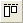

グラフの統合と整列
Customize-Merge-Arrange-Graph
概要
グラフウィンドウの統合ダイアログは、プロジェクト内のグラフから組み合わせたいグラフを選択することができます。新しいページでどのように個々のグラフを配置したいのかを指定するオプションがあります。
「オブジェクト編集」ツールバーを使えば、複数レイヤを素早く整列したり、サイズ変更することができます。
レイヤ管理ダイアログは、1つのグラフページでレイヤを追加、整列、リンクを行います。
ミニツールバー（Origin 2020からの機能）を使うと、簡単かつ直感的にグラフ要素の編集が可能です。
学習する項目
このチュートリアルでは、以下の項目について解説します。
- レイヤのサイズ変更と整列を素早く行う
- 主要な軸と非線形な関係を持つ2番目の軸を追加する
- レイヤ管理を使って、複雑なレイヤ位置とリンクを設定する
- 複数のグラフを1つのグラフに統合する
オブジェクト操作ツールバーを使用してレイヤを整列する
- 「ファイル：開く」を選択し、プロジェクトファイル \Samples\Graphing\Layer Management.opj を開き、サブフォルダArranging Layersを開きます。（サブフォルダが見当たらない場合、表示：プロジェクト・エクスプローラを選択してOriginのプロジェクトエクスプローラウィンドウを開きます）
- オブジェクト操作ツールバーを使用してグラフを編集するので、このツールバーが開いてることを確認します。ない場合は、表示：ツールバーメニューを選択し、ダイアログからこのツールバーを表示します。
- グラフ上で、Shiftキーを押しながら、4つのレイヤすべてをクリックして、グループとして選択します。オブジェクト操作ツールバーの同じ幅ボタン と同じ高さボタン
 をクリックして、レイヤを同じ高さと同じ幅にします。レイヤ内の白い個所をクリックし、全てのグラフレイヤの選択を外します。
をクリックして、レイヤを同じ高さと同じ幅にします。レイヤ内の白い個所をクリックし、全てのグラフレイヤの選択を外します。
- 下の2つのレイヤをShiftキーを押しながらクリックして選択し、オブジェクト操作ツールバーの下揃え
 ボタンをクリックして、それらを整列させます。レイヤ内の白い個所をクリックし、全てのグラフレイヤの選択を外します。
ボタンをクリックして、それらを整列させます。レイヤ内の白い個所をクリックし、全てのグラフレイヤの選択を外します。
- 上の2つのレイヤをShiftキーを押しながらクリックして選択し、上揃え  ボタンをクリックして揃えます。レイヤ内の白い個所をクリックし、全てのグラフレイヤの選択を外します。
- 同様に、左側の2つのレイヤをクリックして選択し、左揃え
 ボタン をクリックし、レイヤ内の白い個所をクリックし、全てのグラフレイヤの選択を外します。
ボタン をクリックし、レイヤ内の白い個所をクリックし、全てのグラフレイヤの選択を外します。
- 右側の2つのレイヤに対しても右揃え
 ボタンを押し、揃えます。
ボタンを押し、揃えます。
- 後のレイヤ管理の説明で、同じプロジェクトを使用するので、ここでは変更をプロジェクトに保存しないでください。
 | オブジェクト操作ツールバーを使えば、複数のレイヤの整列や大きさを素早く調整することができます。最初に選択したレイヤは参照レイヤとなり、他のすべてのレイヤは、その参照レイヤに従って調整されます。 レイヤ管理ツールは、レイヤの大きさや整列だけでなく、レイヤのリンクや並び替えのような多くのオプションがあります。
|
| 複数レイヤグラフでレイヤを選択するもう1つの方法は、CtrlキーまたはShiftキーを押しながらグラフレイヤアイコンをクリックすることです。
|
非線形の数式を使って逆の軸を表示する
Originの２DグラフはX・Y軸のセットで描かれています。それぞれXとY軸で逆の軸を表示することができます。さらにその逆の軸は元の軸に関してユーザ定義された非線形の数式を使用し目盛りを設定することもできます。
- プロジェクトエクスプローラウィンドウで、Nonlinear Axisというサブフォルダを開きます。
- グラフウィンドウをアクティブにして、下X軸上でクリックし、ミニツールバーを開きます。反対側の軸を表示ボタンをクリックして、上X軸を表示します。
- レイヤに上X軸が表示されます。この軸上でクリックしてミニツールバーを開き、目盛ラベルを表示ボタンをクリックして軸ラベルを表示し、目盛のスタイルボタンをクリックして内側にします。
- 軸ラベル上でダブルクリックして、軸ダイアログの目盛ラベルタブを開きます。上軸のラベルを、wavelength(下X軸) と energy(上X軸)の関係が、Energy (eV) = 1240/Wavelength (nm) になるように設定します。そのため、数式ボックスに1240/x を入力します。
- OK ボタンをクリックします。下軸との適正な関係が設定さえた軸ラベルが表示されます。
| - 右Y軸に対して非線形の関係を設定する場合、数式ボックスでは、yではなくxを使用する必要があります。
- グラフ操作: レイヤ管理 ダイアログでも同様の設定で、反対側に軸を設けることができます。
|
- 上X軸タイトルとして、テキストオブジェクトEnergy (eV)を追加します。

- 上図を見ると、上軸の開始の位置に欠損値が表示されていることがわかります。これを非表示にするには、軸上でクリックしてミニツールバーを開き、軸ダイアログボタンをクリックして、特別な軸刻みを選択し、ダイアログを開きます。
- 開いたダイアログで、左タブの軸の開始を選択し、表示ドロップダウンリストから隠すを選択します。OKをクリックしてこの設定を適用して、ダイアログを閉じます。
レイヤ管理を使ってレイヤのリンクや位置を設定する
レイヤ管理ツールを使って、レイヤの位置、サイズ、入れ替え、リンクによるレイヤ間の関係の構築を行うことができます。
- プロジェクト \Samples\Graphing\Layer Management.opj を再度開き、 Arranging Layersというサブフォルダに切り替えます。 ファイル：最近使ったプロジェクト：Layer Management.opjを選択して、このプロジェクトを再度開くことができます。 プロジェクトに変更を保存しないでください。
- グラフ操作：レイヤ管理から、レイヤ管理ダイアログを開きます。左側パネルで、それぞれのレイヤの名前をダブルクリックして、変更します。上から順に、Peak 1, Peak 2, Peak 3, Peak 4と名前を付けます。 レイヤ名は、各レイヤの凡例に対応します。
- 配置タブを開き、下の手順に沿って操作します。
- 軸フレームの表示にチェックをします。
- 水平ギャップと垂直ギャップを0にセットします。
- 適用をクリックします。
これにより、レイヤの大きさと位置を変更して整列し、レイヤが重なった部分の軸刻みとラベルを非表示になります。
- 軸タブを開き、Ctrlキーを押しながら、左側のパネルでPeak 1 と 3 を選択し、左ブランチを開き、軸刻みの方向を内側にし、適用をクリックします。
- Peak 3と4を選択し、下軸の軸刻みの方向を内側にし、適用をクリックします。 そして、Peak 1と2を選択し、上軸の軸刻みの方向を内側にし、適用をクリックします。
- リンクタブに移動し、左側のリストで、Peaks 2、3、4 を選択し、これらのX軸を直接(1対1)でLayer1にリンクし、適用をクリックします。
OK をクリックして、ダイアログを閉じます。
- 左側上のレイヤ（レイヤ1）を選択し、ドラッグしてサイズを変更します。そして、そのレイヤを動かします。 なお、Layer1にリンクされているので、他のレイヤも同時に動きます。
- レイヤ1の上軸をクリックして、ミニツールバーの軸スケールボタンをクリックし、ダイアログを開きます。スケールの開始を10、終了を35 に変更して、OKをクリックします。他のすべてのレイヤのX軸はリンクしているので、この操作により新しいX範囲で同じように表示されます。
| リンクしたレイヤを並び替えるとき、それらは1つの単位で扱われるので、並び替える際には最初にリンクを解除し、並び替えた後に再びリンクの設定をします。
|
複数グラフを統合する
このセクションでは、同じプロジェクト内の異なるサブフォルダにある2つのグラフを統合します。4つのレイヤを持つグラフは1つの単位として扱います。
- Arranging Layers サブフォルダのGraph1がアクティブな状態で、再スケールボタンをクリックします。
- メニューから、グラフ操作：グラフウィンドウの統合を選択してダイアログを開きます。
- 以下の操作を行います。
- グラフの右横の三角ボタンをクリックして、フライアウトメニューからプロジェクト中の全てを選択します。プレビューウィンドウにGraph1 と Graph2 表示されます。
- 行の数が2で、列の数が1であることを確認します。
- 元のグラフを1つの単位として扱うのチェックが付いていることを確認します。
- 垂直の間隔を20に設定します。
- OK をクリックして、ダイアログを閉じます。新しく統合グラフが作成されました。